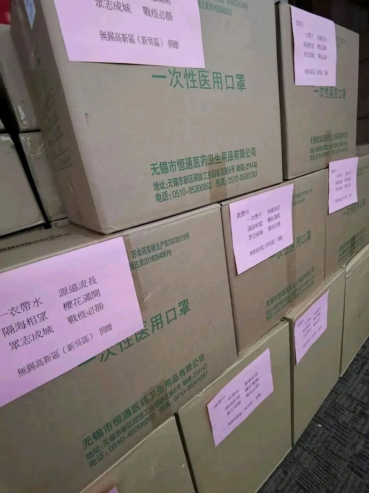

此时此刻，他们在日本，他们在韩国
原文链接 备份链接 随着新冠肺炎疫情在全球蔓延，韩国和日本已经成为疫情高发地区。据韩国卫生部门消息，截至当地时间3月3日16时，韩国感染者总数升至5186人。日本形势同样不容乐观，截至当地时间3日下午六点半，已有985例确诊病例。当地疫情 …
澎湃新闻记者 南博一
2月上旬
丰川市向无锡市捐赠了4500只口罩以及防护服等物资
而就在近日
当丰川市面临口罩紧缺时
无锡市立即筹措5万只口罩火速驰援
日本网友目睹整个过程之后，直称“泪目”

无锡返捐日本丰川市的口罩。
据共同社3月25日报道，日本爱知县丰川市24日表示，由于新冠肺炎疫情导致口罩紧缺问题日益严重，已决定向姐妹城市中国江苏省无锡市新吴区求援。在2月上旬，丰川市向无锡捐赠了4500只口罩以及防护服等物资。
而随着疫情在日本蔓延，丰川市目前也面临口罩紧缺的情况。该市市长竹本幸夫表示，丰川市内医院和保育园等使用的口罩5月将变得紧缺，已有一些养老院表示“无法获取口罩”。其称，今后该市的口罩供应预计将捉襟见肘。一筹莫展之际，竹本幸夫才最终决定求援，他向无锡发出殷切请求称，“双方是困难时互相帮助的关系。若对方有库存，希望这次给我们发送口罩。”
接到求援后无锡市也迅速给予积极回应。3月24日晚上8时许，无锡新吴区官方微博@无锡新吴在线以“投桃报李，共盼春来”为题发布公告表示，自日本暴发疫情以来，就多次积极与丰川市联系返捐事宜，在近日获悉该市库存不足之后，新吴区迅速筹集了5万只口罩反向捐赠，24日已由快递公司分批寄出，这批口罩现在已经在路上了。
随后中国驻日本大使馆也在推特上转发了此事，本来一些日本网友之前对于丰川市的做法不能理解——寄出去的口罩怎么还能要回来？
一些中国网友的留言却展现了友好的态度，其中有网友表示，无锡市回赠十倍数量的口罩，充分体现了“滴水之恩当涌泉相报”，还有网友表示，这是两国需要互相帮助的时候，在中国需要帮助的时候收到了日本的物资援助，中国人由衷地表示感谢。

日本网友也纷纷留言，称“有些流泪了”。
据日本放送协会NHK25日消息，24日，日本国内共新增71例新冠肺炎确诊病例，创单日增幅新高。截至目前，日本累计新冠肺炎确诊病例已增至1211例。
澎湃评论 | 医疗无国界，人心更不该有藩篱
（澎湃评论员 李勤余）
这样的“十倍奉还”令人感动，丰川市负责人的话说得更到位：“我们的关系是在有困难的时候会相互提供帮助。”懂得相互支持、相互支撑，这是人类最难能可贵的地方。面对疫情带来的困难，我们没有理由忘记这一点。
新冠肺炎疫情终究会过去，但它留给人类的思考还会持续很久。它更像是一种象征、一种隐喻：如果人类始终只知维护一己之私、坚持自我第一，那么，随之而来的后果将是灾难性的。病毒和全球化的历史趋势一样，不以任何人的意志为转移。医疗无国界，人心更不该有藩篱，这一点应成为共识。
戳这里进入
“全国新型冠状病毒感染病例实时地图”↓↓
本期编辑 邢潭
推荐阅读


原文链接 备份链接 随着新冠肺炎疫情在全球蔓延，韩国和日本已经成为疫情高发地区。据韩国卫生部门消息，截至当地时间3月3日16时，韩国感染者总数升至5186人。日本形势同样不容乐观，截至当地时间3日下午六点半，已有985例确诊病例。当地疫情 …
原文链接 备份链接 近日，多国新冠肺炎确诊人数暴增。美国出现第二例新冠肺炎死亡病例，意大利新冠肺炎累计病例1694例，日本北海道宣布进入紧急状态，世界卫生组织总干事谭德塞2月28日宣布将新冠肺炎疫情全球风险级别由此前的“高”上调为“非常 …
原文链接 备份链接 澎湃新闻记者 于潇清 近日，韩国和日本新冠肺炎疫情防控形势日趋严峻，引起国际社会关注。 据韩国中央防疫对策本部2月28日最新通报，截至当天上午9点，韩国再新增新冠肺炎确诊病例256例，累计2022例，死亡病例达13例。 …
原文链接 备份链接 来源：图虫 记者：卢奕贝 编辑：牙韩翔 “ 疫情影响之下全球防护设备，尤其是口罩供不应求。这让所有口罩生产商的工厂都开始忙碌起来。 ” 一家名为Kolmi Hopen的公司突然收到了一大笔订单——5亿个口罩。 这家位于 …
原文链接 备份链接 关注并星标消费新声 不错过泛消费任何最新动态 尤其在近十年，尽管国际形势时有起落，但两国的经济和民间交流正在不可逆地粘连到一起，相似的传统文化背景让我们之间形成对照，成为几乎不可能被斩断的近邻。 作者 | …